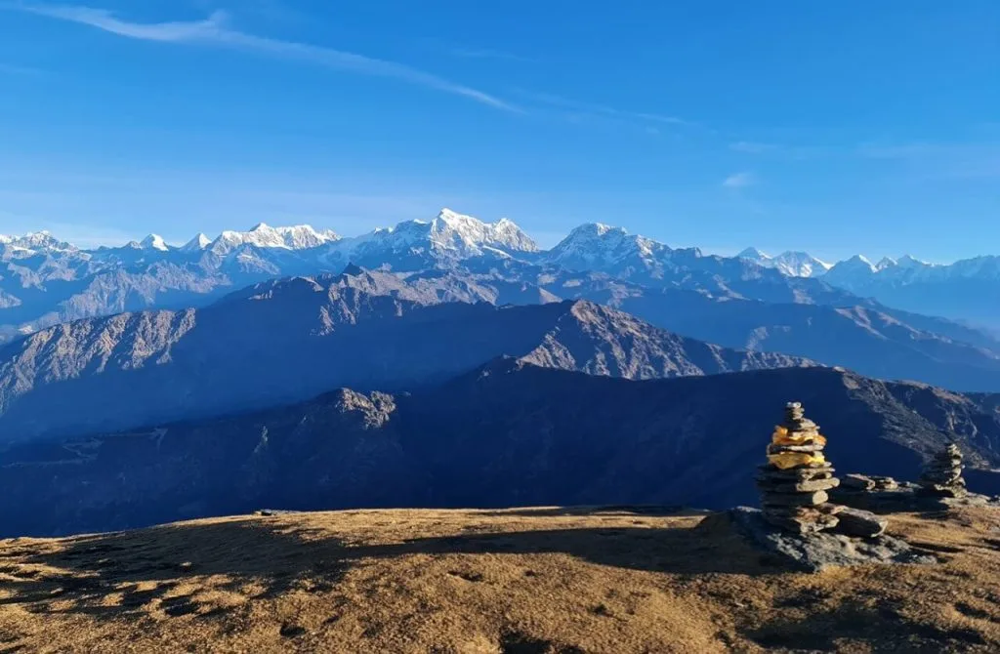

1. What Makes a Trek Beginner-Friendly in Nepal? (Elevation, Distance & Infrastructure)

For travelers planning their first visit to Nepal, the word "Himalayas" often conjures intimidating images of vertical ice walls, heavy 20kg backpacks, crevasse rescues, and weeks of sub-zero deprivation.
In reality, Nepal's historic trade routes and village arteries form the world's most sophisticated network of teahouse trekking trails. You walk with a light daypack (5kg) containing water, camera, and a jacket, while your luggage is transferred ahead by a friendly porter. Every evening, you arrive at a warm family-run lodge offering a private twin bedroom, a wood-heated dining room, a hot shower, and a full menu of freshly prepared meals.
- Forgiving Altitude: Sleeping elevations primarily below 3,200m–3,800m, keeping Acute Mountain Sickness (AMS) risks exceptionally low.
- Manageable Walking Hours: Gentle daily stages of 4 to 6 hours covering 8 to 12 kilometers at an unhurried, meditative pace.
- Premium Teahouse Amenities: Frequent lodges every 1–2 hours, Western flushing toilets, gas-heated showers, solar electricity, and cell reception.
- Flexible Exit Logistics: Close roadheads or frequent jeep access points allowing easy shortening of the trek if you feel fatigued.
2. Top 10 Beginner Treks in Nepal: Quick Comparison Matrix 2026–2027
Before diving into the detailed route profiles, here is a high-level comparison matrix of Nepal's top 10 introductory treks, evaluated by duration, maximum altitude, starting region, and physical difficulty:
| Trek Name | Duration | Max Altitude | Region | Physical Challenge | Key Visual Highlight |
|---|---|---|---|---|---|
| 1. Ghorepani Poon Hill | 4 – 5 Days | 3,210m / 10,531ft | Annapurna | Easy to Moderate | Sunrise panorama of Dhaulagiri & Annapurna I |
| 2. Langtang Valley Trek | 7 – 8 Days | 3,870m (4,773m opt) | Langtang | Moderate | Glacial valley, Kyanjin Gompa & yak cheese |
| 3. Mardi Himal Ridge | 5 – 6 Days | 4,500m / 14,763ft | Annapurna | Moderate | Intimate ridge view of Machhapuchhre (Fishtail) |
| 4. Everest View Trek | 7 – 8 Days | 3,880m / 12,729ft | Everest | Moderate | Hotel Everest View & Tengboche Monastery |
| 5. Tamang Heritage Trail | 5 – 7 Days | 2,607m / 8,553ft | Langtang | Easy | Tatopani natural hot springs & cultural homestays |
| 6. Short Annapurna Base Camp | 8 – 9 Days | 4,130m / 13,549ft | Annapurna | Moderate+ | 360° glacial sanctuary amphitheater |
| 7. Pikey Peak Trek | 5 – 6 Days | 4,065m / 13,336ft | Lower Everest | Moderate | Hillary’s favorite wide Everest-to-Kanchenjunga view |
| 8. Khopra Ridge & Dhaulagiri | 8 – 9 Days | 3,660m (4,660m opt) | Annapurna | Moderate | Massive vertical drop into Kali Gandaki gorge |
| 9. Mohare Danda Eco-Trek | 4 – 5 Days | 3,300m / 10,826ft | Annapurna | Easy to Moderate | Community lodges, high-speed Wi-Fi & zero crowds |
| 10. Chisapani Nagarkot Rim | 3 Days | 2,175m / 7,135ft | Kathmandu Valley | Easy | Shivapuri National Park forests & sunrise vistas |
3. Ghorepani Poon Hill Trek (4–5 Days / 3,210m): The Classic Himalayan Sunrise

If you have never stepped foot on a mountain trail, the Ghorepani Poon Hill Trek is the undisputed champion of beginner adventures. Located just a 1.5-hour drive from the serene lakeside town of Pokhara, this route delivers maximum visual reward for modest physical effort.
The trail winds through ancient rhododendron and oak forests, climbs traditional stone staircases through picturesque Gurung and Magar farming settlements (Tikhedhungga, Ulleri, Ghorepani), and culminates in a pre-dawn 45-minute stroll to the viewpoint atop Poon Hill (3,210m).
- The View: A staggering 180-degree panoramic skyline showcasing two 8,000-meter giants—Dhaulagiri (8,167m) and Annapurna I (8,091m)—alongside Hiunchuli, Annapurna South, and the sacred unclimbed pyramid of Machhapuchhre (Fishtail, 6,993m).
- Teahouse Luxury: Excellent teahouses with heated dining rooms, delicious bakery pastries, espresso coffee, hot showers, and reliable Wi-Fi.
- Best For: Families with children, older travelers, photographers, and first-time hikers with limited holiday time (4 to 5 days).
4. Langtang Valley Trek (7–8 Days / 3,870m): Glaciers, Yak Cheese & Tamang Heritage

Located directly north of Kathmandu, the Langtang Valley Trek is widely considered Nepal's most complete introductory mountain trek. It requires zero domestic flights, saving you money, flight stress, and weather cancellations.
After a scenic overland drive to Syabrubesi (1,460m), the trail ascends through Langtang National Park alongside the roaring Langtang Khola river, passing through Lama Hotel, Ghodatabela, and the rebuilt village of Langtang before opening into the sweeping glacial valley of Kyanjin Gompa (3,870m).
Why Beginners Love Langtang
- Road Access: No Lukla flight delays; reached by a 6–7 hour private 4WD drive from Kathmandu.
- Gradual Incline: Follows a gentle, steady river valley gradient allowing effortless natural acclimatization.
- Kyanjin Gompa Hub: Spend 2–3 nights in a scenic stone village with historic monasteries, artisan yak cheese factories, and German bakeries.
Optional Summit Viewpoint
- Kyanjin Ri (4,773m): A rewarding, non-technical morning hike from the village granting 360° views of Langtang Lirung (7,227m) and glacial icefalls. Completely optional—you can also relax in the village!
5. Mardi Himal Ridge Trek (5–6 Days / 4,500m): Dramatic Panoramas of Machhapuchhre

For beginner hikers who desire the sensation of a true high-alpine wilderness without the extreme 2-week commitment of the Annapurna Circuit or Everest Base Camp, the Mardi Himal Trek is the ultimate choice.
Opened relatively recently, this trail avoids motorized roads entirely. Starting from Kande or Dhampus near Pokhara, you climb through enchanting moss-draped rhododendron and oak cloud forests (Deurali and Forest Camp) before bursting out onto a dramatic alpine crest at Low Camp (2,970m) and High Camp (3,580m).
- The Sensation: Walking along a narrow mountain ridge with a 1,000-meter drop on either side, directly facing the razor-sharp southwest face of Machhapuchhre (Fishtail Mountain).
- The High Point: Mardi Himal Viewpoint (4,200m) or Base Camp (4,500m), offering an intimate, face-to-face perspective of Annapurna South that few other short treks can rival.
- Pacing: Standard 5-day itineraries allow for easy ascents and quick descents via Siding village.
6. Everest View Trek (7 Days / 3,880m): Luxury Lodges & Mount Everest Views Without EBC Strain

Do you dream of witnessing Mount Everest with your own eyes, but worry about the physical exhaustion, thin air, and primitive teahouses of Gorak Shep (5,164m)? The Everest View Trek (also known as the Tengboche Trek) is designed specifically for you.
This 7-day luxury and cultural itinerary flies into Lukla (2,846m) and follows the classic Everest highway along the roaring Dudh Koshi river, across the high Hillary Suspension Bridge, and up to the buzzing Sherpa capital of Namche Bazaar (3,440m).
- Hotel Everest View (3,880m): Sip hot coffee or champagne on the world’s highest hotel terrace with an unhindered, postcard-perfect view of Everest, Lhotse, and Ama Dablam.
- Tengboche Monastery (3,867m): The spiritual heart of the Khumbu. Visit the sacred Buddhist monastery, spin ancient prayer wheels, and attend afternoon chanting ceremonies led by resident monks beneath the soaring pyramid of Ama Dablam.
- Comfort & Safety: You sleep in comfortable heated lodges, avoid the cold and altitude stress of high glacial moraines, and return safely to Lukla within a week.
7. Short Annapurna Base Camp (8–9 Days / 4,130m): Glacial Amphitheater for Fit Beginners

For beginner hikers who possess solid cardiovascular fitness from regular running, cycling, or gym training, the Short Annapurna Base Camp (ABC) Trek offers the thrill of standing inside a high-altitude glacial amphitheater without technical mountaineering.
Unlike the 14-day Everest Base Camp trek which requires crossing harsh boulder moraines and sleeping at 5,164m, Annapurna Base Camp sits at a much more manageable 4,130 meters (13,549 feet). The trail ascends through the lush Modi Khola gorge, passing through Chhomrong and Dovan before emerging into Machhapuchhre Base Camp (MBC) and the legendary Annapurna Sanctuary.
The Annapurna Base Camp route features over 3,000 stone steps descending and ascending around Chhomrong. While non-technical, it tests quadriceps and knee stability. We strongly recommend trekking poles and dedicated stair-climbing training before departure!
8. Tamang Heritage Trail (5–7 Days / 2,607m): Cultural Homestays & Natural Hot Springs
If your priority is rich cultural immersion, authentic Tibetan-influenced community life, and peaceful trails with minimal other tourists, the Tamang Heritage Trail in the Rasuwa district is an absolute treasure.
Developed as a sustainable community-based tourism initiative, this trek connects historic villages inhabited by the Tamang people—descendants of ancient Tibetan cavalry soldiers who settled along the trans-Himalayan trade route centuries ago.
- Gentle Altitude: The highest sleeping elevation is only 2,607m at Nagthali Danda, completely eliminating altitude sickness concerns.
- Tatopani Natural Hot Springs: Soak your muscles in volcanic mineral hot springs situated in the scenic mountain village of Tatopani.
- Traditional Homestays: Stay in authentic wooden Tamang homes in Briddhim and Gatlang, enjoying home-cooked meals, traditional shaman dances, and handcrafted woolen textiles.
9. Pikey Peak Trek (5–6 Days / 4,065m): Sir Edmund Hillary’s Favorite Everest Vista

Legendary mountaineer Sir Edmund Hillary famously declared that the panoramic summit view from Pikey Peak (4,065m) was his personal favorite vantage point in all of Nepal—superior even to Kala Patthar.
Located in the lower Solukhumbu district, this trail is reached by road via Dhap (no Lukla flights needed). It winds through peaceful cheese factories, pine forests, and ancient monasteries (Thupten Chholing Gompa) before ascending to the summit ridge of Pikey Peak.
Because of its vantage point south of the main Himalayan crest, you witness a staggering uninterrupted panorama of six 8,000-meter peaks simultaneously: Mount Everest, Kanchenjunga, Makalu, Lhotse, Cho Oyu, and Manaslu!
10. Khopra Ridge & Dhaulagiri Panorama (8–9 Days / 3,660m): The Uncrowded Viewpoint
For beginners who want the iconic mountain vistas of the Annapurna region but want to avoid the busy crowds of Poon Hill, Khopra Ridge (Khopra Danda) is Nepal's best-kept secret.
Branching off the main Ghorepani circuit, this trail climbs through rhododendron forest onto an isolated alpine ridge at 3,660 meters. The ridge sits directly opposite the colossal 8,167-meter south wall of Dhaulagiri, looking straight down into the world's deepest gorge—the Kali Gandaki.
- Community-Owned Lodges: All lodges along Khopra Ridge are community-owned eco-teahouses whose profits directly fund local village high schools.
- Khayer Lake Day Trip: Ambitious hikers can undertake a challenging day hike to the sacred alpine waters of Khayer Lake (4,660m), while beginners can simply relax at the ridge lodge.
11. Altitude Safety, AMS Awareness & The "Golden Rules" of Ascent
Even on beginner treks, safety is paramount. Any trail ascending above 2,500 meters (8,200 feet) crosses into high-altitude territory where atmospheric pressure drops and oxygen molecules become less dense.
Understanding the fundamentals of Acute Mountain Sickness (AMS) ensures you recognize mild symptoms before they become serious:
Normal Body Adjustments
- Mild shortness of breath when walking uphill.
- Faster resting heart rate.
- Increased urination (especially if taking Diamox).
- Vivid dreams or light sleeping.
Warning Signs of Mild AMS
- Persistent throbbing headache unrelieved by Ibuprofen.
- Loss of appetite and nausea.
- Dizziness, lightheadedness, and profound fatigue.
- Insomnia and waking up gasping for air.
- Rule 1: If you feel unwell at altitude, assume it is altitude sickness until proven otherwise.
- Rule 2: Never ascend to a higher sleeping elevation with symptoms of AMS.
- Rule 3: If symptoms worsen while resting, descend immediately. Descending just 300 to 500 meters often provides rapid relief.
12. Teahouse Living for First-Timers: Food, Rooms, Showers & Daily Budgets
What is daily life actually like on a Nepali trekking trail? For first-time visitors, the hospitality and comfort of Himalayan teahouses is a wonderful surprise.
| Teahouse Feature | What to Expect | Price Range (NPR / USD) |
|---|---|---|
| Private Twin Room | Two single foam beds with sheets, pillow, and quilted blanket. Simple unheated wooden/stone rooms. | NPR 500 – 1,000 ($4 – $8 USD) / night |
| Hot Gas/Solar Shower | Piped gas or solar-heated water in private bathroom stall; reliable up to 3,500m. | NPR 300 – 500 ($2.50 – $4 USD) |
| The Dal Bhat Feast | Steamed rice, lentil soup, seasonal vegetable curry, spinach, and pickles. Free unlimited refills! | NPR 600 – 850 ($4.50 – $6.50 USD) |
| Western & Breakfast Fare | Pancakes, porridge, eggs, potato rosti, vegetable pizza, pasta, and momos. | NPR 400 – 700 ($3 – $5.50 USD) |
| Wi-Fi & Charging | Wi-Fi routers in dining halls; multi-plug charging stations by the central stove. | NPR 200 – 400 ($1.50 – $3 USD) |
When you book an all-inclusive guided package with Igloo Himalaya Treks, all three meals, lodge rooms, and hot beverages are fully included in your fixed price.
13. First-Timer Packing Essentials: What You Truly Need vs. What to Skip
First-time trekkers almost universally pack too much. You do not need to buy thousands of dollars worth of extreme polar expedition gear for a beginner trek in Nepal.
Must-Have Essentials
- Broken-In Hiking Boots: Waterproof boots with ankle support and grippy rubber outsoles.
- Trekking Poles: Indispensable for saving your knees on long stone stair descents.
- Layered Clothing: 2 merino wool base tops, 1 fleece jacket, 1 down jacket, and 1 waterproof rain shell.
- Comfortable 25L–30L Daypack: With an ergonomic hip belt and rain cover.
- Reusable Water Bottle & Purification: Aquatabs or SteriPEN UV device.
What to Leave at Home
- Heavy Cotton Jeans & Hoodies: Take days to dry and cause chafing.
- Heavy Mountaineering Boots: Stiff crampon boots will ruin your feet on stone trails.
- Massive Toiletry Bottles: Pack travel-sized eco-friendly soaps and wet wipes.
- Excess Cash/Valuables: Leave jewelry, extra credit cards, and laptops in Kathmandu hotel storage.
14. Why Start Your Himalayan Journey with Igloo Himalaya Treks
Embarking on your very first trek in a foreign mountain range can feel daunting. Having a trustworthy, experienced local team by your side transforms nervous anticipation into effortless wonder.
At Igloo Himalaya Treks, our Sherpa guides have guided thousands of first-time travelers across every corner of Nepal:
- Patient, Adaptive Pacing: We hike at your rhythm. There is zero pressure to rush; we stop for tea, photos, and wildlife whenever you wish.
- Daily Health Screenings: Every morning and evening, your guide checks your pulse and blood oxygen saturation with a certified pulse oximeter.
- Ethical Porter Care: Your porter carries a maximum of 20kg, receives fair union living wages, and is fully insured with cold-weather gear.
- Seamless Transfers: From airport pickup in Kathmandu to private 4WD jeeps and boutique lodge reservations, every logistical detail is handled flawlessly.
Frequently Asked Questions (FAQ) About Beginner Trekking in Nepal
Select a category below to explore expert answers to the most common questions travelers ask about Best Treks in Nepal for Beginners:
Difficulty & Fitness

Ready to Experience the Himalayas?
Whether you are preparing for high-altitude trekking, cultural circuits, or alpine summit expeditions, start planning a bespoke journey tailored to your fitness, travel season, and style.